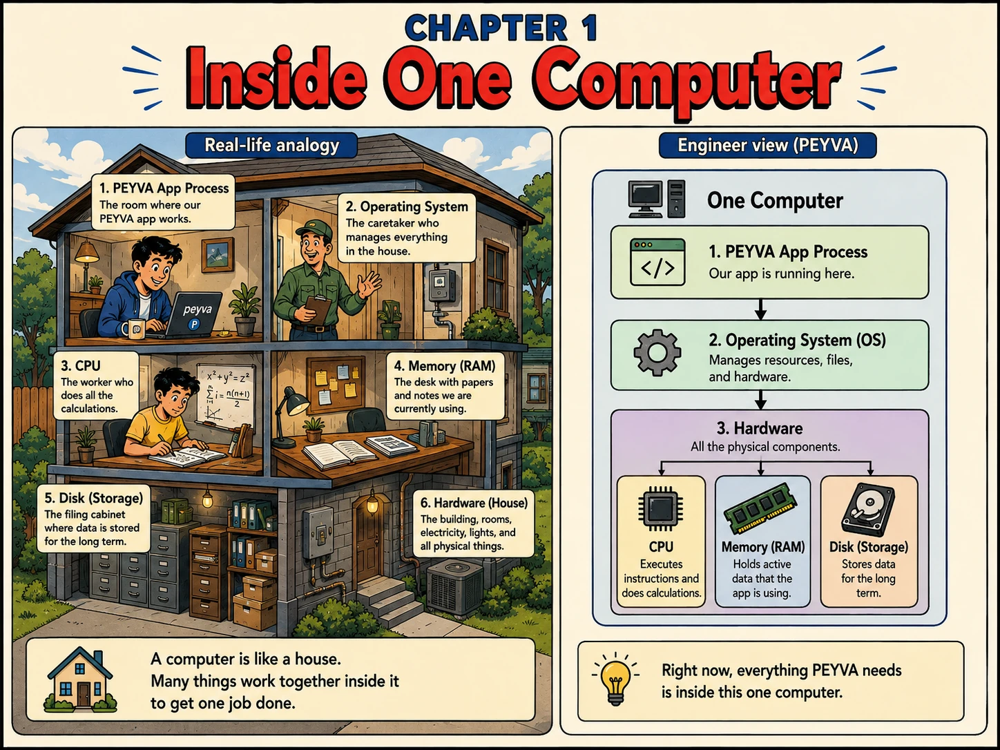

Chapter 1
Inside One Computer
A running program is one room in a house. The OS is the caretaker, the hardware is the house.

1. Intuition
- The peyva program from Chapter 0 isn't magic. It's a room in a house.
- The OS is the caretaker; the hardware is the house.
- CPU does the work, memory (RAM) is today's desk, disk is the long-term filing cabinet.
2. Concepts
- Process. A running program, the room peyva's app is currently working in.
- Operating System (OS). The caretaker that manages resources, files, and hardware for every process.
- CPU. The worker who executes instructions and does calculations.
- Memory (RAM). The desk holding data the app is actively using: fast, but empty when power goes off.
- Disk (Storage). The filing cabinet where data is kept long term, even after a restart.
3. Under the Hood
- One computer = peyva App Process -> Operating System -> Hardware.
- Running the program asks the OS to create a process, load it into memory, and give it CPU time.
4. Build It Hands-on Building in Go, change in Chapter 0
- No component this chapter. See the Vault's process the way the OS sees it.
Role prompting. A role focuses the assistant's tone and its judgement about what to include. Unassigned, it explains what a program is; cast as an engineer sitting beside you, it hands you the command and tells you what the columns mean.
Documented in Anthropic: Prompting best practices, Give Claude a role · asking price for this chapter, about 196 tokens
Build~196 tokens
Build this in Go, standard library only.
Code in peyva/<component>/, one folder per component.
Money: exact decimal or integer minor units, never floating point, two decimal places.
The goal and invariants are in peyva/goal.md.
You are a systems engineer sitting next to me, teaching by pointing at what is actually on my screen. You explain a column when I meet it, not before.
I have a Go program running, a Vault holding one account balance in memory.
Walk me through inspecting it as the operating system sees it: how to find its process id, and how to read its CPU and memory use. Give me the command for my OS and explain what each column means.
Then tell me which part of that memory holds the Vault's balances, and why that number goes to zero the moment I stop the process.
I know Go but I've never looked at a process from the outside. Skip the explanation of what a program is.
Done when I can state the process id and its memory use, and explain in one sentence why nothing survives a restart.
5. Break It Test it
- Processes are isolated from each other. Prove it.
- Start two copies of peyva at once. Each gets its own PID and its own memory. They don't share the account held in memory.
- Kill one with Ctrl+C. The other keeps running untouched.
- That isolation is also what makes it possible to run several copies of peyva at once, each in its own memory, without them treading on each other.
Quick tip: Right now, everything peyva needs is inside this one computer.